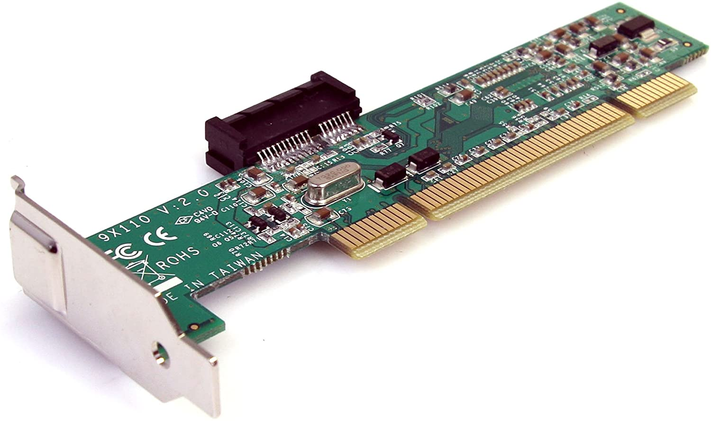
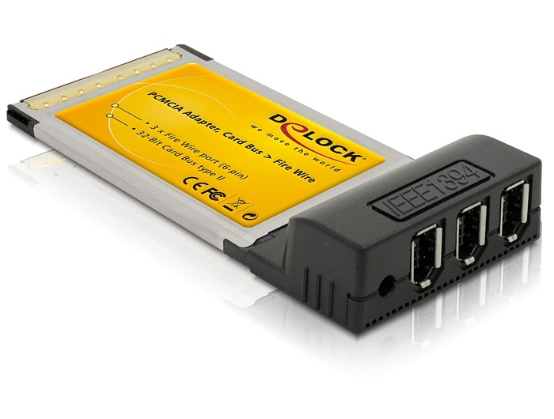
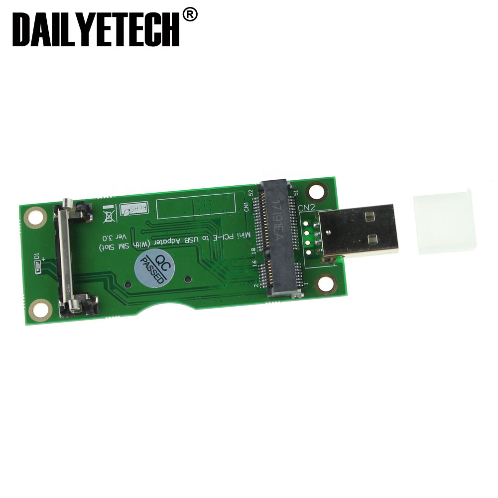
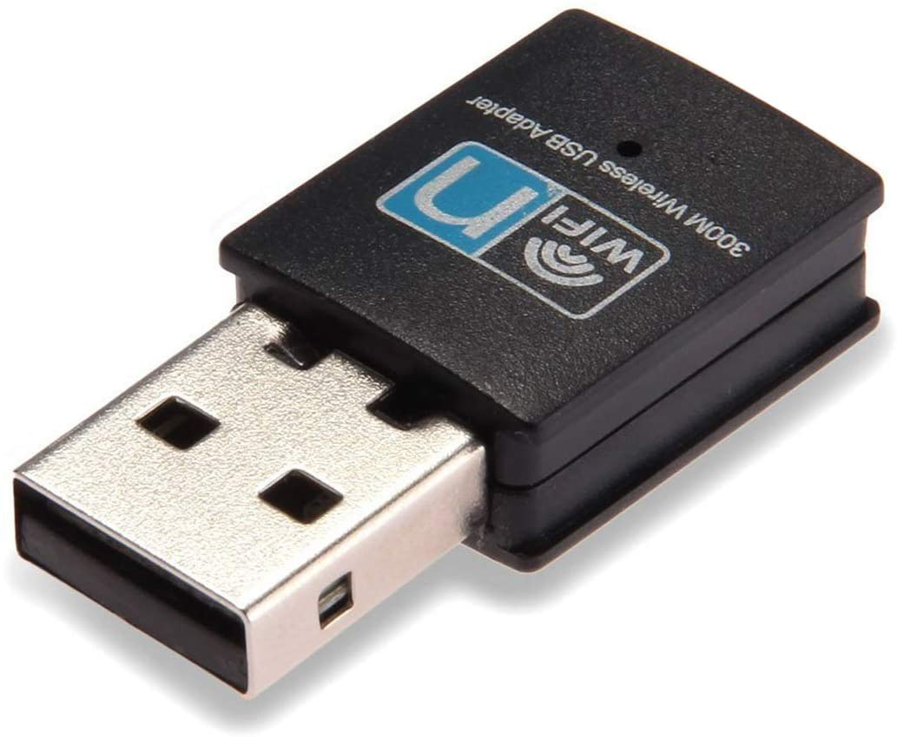

Network Adapters
- Perform specific tasks
- Enable nodes to communicate on network
- Referred to as network interface cards (NICs)
- Break data into packets
- Act as gatekeepers for information flowing to and from client computer

Network adapters are devices that are designed to improve your internet connection using the existing wiring that you have at home. Sometimes, you will experience slow or intermittent connection, dead spots where you can't get a connection at all or you want to upgrade your set-up for faster speeds either for gaming or setting up a business.
Powerline Adapters plug in to the electrical outlets in your home and extend WiFi via your home’s electrical wiring. This type of adapter, however, has had its fair share of reviews complaining about slow speeds or random disconnections from the network. This is especially the case for powerline adapters using the old Home Plug (AV) technology.
In many cases, the electrical wiring itself in the home is not set up for powerline ethernet. Other issues may be that the distance is too great between the plugs, and powerlines are also subject to some interference. Unfortunately it’s not easy to determine what the issue may be.
The PCI adapter is an add-in card that can fit within a desktop computer. The intended computer's motherboard must have an open PCI slot in order to use a PCI adapter. These adapters offer cordless convenience and good speeds.
Also known as the PC card, this adapter works well for notebook computers. The antenna sticks out of the body of the notebook. PCMCIA adapters offer scalable expansion capabilities and support for various storage, memory and communication functions.
This adapter needs to be installed inside the desired laptop. The antenna of the mini PCI adapter is built into the device for a more compact look and feel
Perhaps the easiest solution, the wireless USB adapter offers a plug-and-play solution. Simply insert the device into the USB port and enjoy your connectivity.
